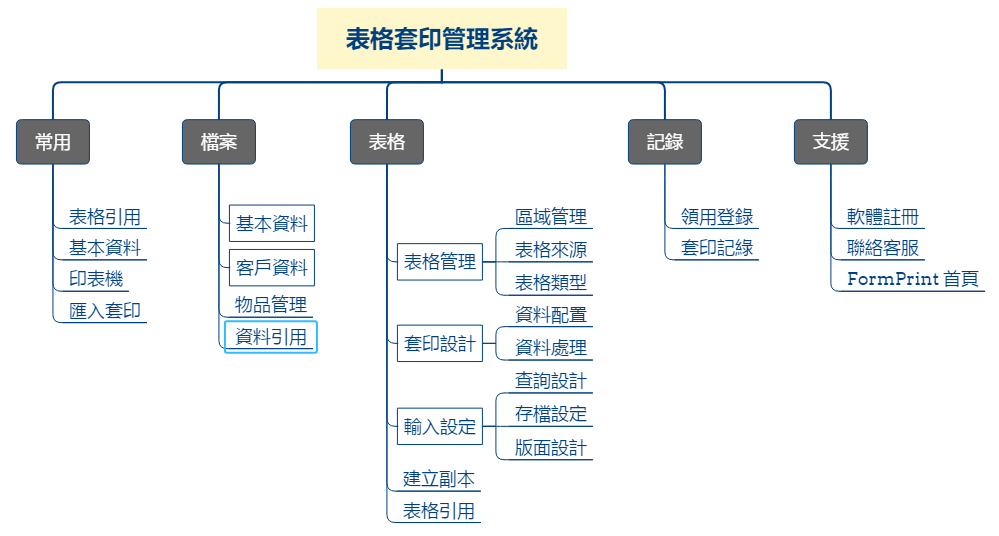

自行設計表格套印內容
本軟體可以由使用者自行設計表格套印功能，但一個完整的套印軟體，必須要有足夠的資料處理功能，學習自行設計表格套印內容的技術，您才能隨身所欲的使用本軟體。
我們將以郵局存款單的套印設計為例，為便利說明，請您再看一次軟體架構圖

表格套印管理系統架構圖
- 將存款單掃描為電子檔：
- 先將存款單(表格)以最清楚的方式掃描成電子檔。圖檔要清楚、不可歪斜、掃描時可在表格背面放一張色紙，以利後續剪裁。
- 將掃描並經剪裁後的存款單(表格)存成圖檔，並罝放於「表格套印管理系統 > image > FormImage」資料夾內，取1個跟表格有關的檔名(例如TW70021.jpg)，以便於管理。
- 用尺量表格的長度及寬度，單位為公制mm(1公分=10mm)，例如寬191mm、長(高)106mm
- 建立表格資料：
- 進入「表格設計 > 表格管理」，點選新增，逐一輸入相關資料後點選存檔。
- 設定套印內容：
- 由使用者決定要在表格套印的字串及圖檔
- 資料配置設定：
- 設定套印項目資料取得方式,直接取用、資料分配及引用方式並排定期先後順序。
- 提供後續「資料處理設定」「資料輸入設定」、資料存檔設定的參考依據。
- 資料處理設定：例如臺灣日期改為西元日期或將日期分為年、月、日，以及將數字1,000 轉換成壹仟元整，都是由這裏進行設定。
- 輸入設定
- 增加輸入項目：不需要套印出來的輸入項目，主要用於。
- 資料查詢：例如輸入帳戶編號，查詢並帶入帳戶相關資料
- 資料處理：例如表格編號資料不需要套印，但需要存入資料庫。
- 輸入處理設定：例如日期轉換、引用前次日期或限定僅能輸入數字…等功能。
- 資料引用設定：可以設定經由那個欄位查出相關資料，例如輸入帳戶代號查出該帳戶戶 名等相關資料。
- 存檔設定：可將套印後的資料存檔，存檔設定其項目及順序等資料格式，也可供匯入套印 的檔案參考。